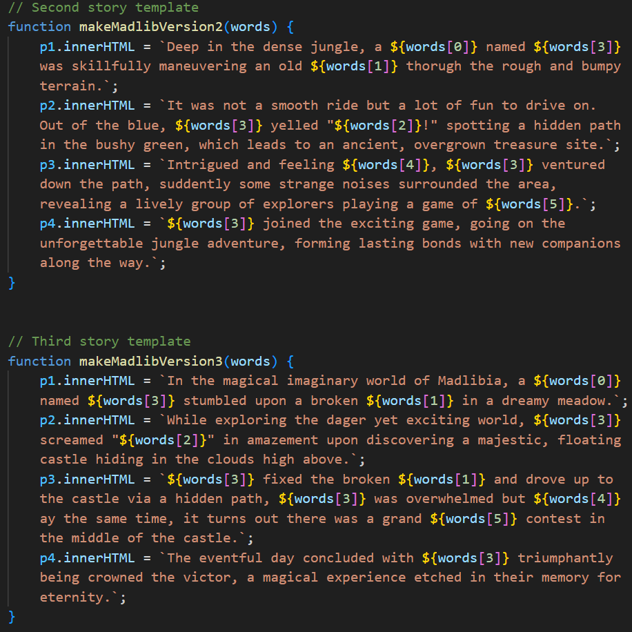

Expert/User Feedback Intergration
Feedback gathered from knowledgeable sources, including my TA from DES 157A and my professor from DES 50, has been invaluable. They highlighted three key areas for improvement: enhancing font readability within the form, adding extra stories for narrative varieties, and the necessity of an introductory message paired with guidance for the prompt questions. These insights were instrumental in refining the project's usability and accessibility.
Introduction Enhancement
Recognizing that not all users may be familiar with Madlibs, I've implemented an introductory overlay that activates upon page load. This feature provides a welcoming brief about the game, assisting newcomers in quickly grasping the concept.

To further aid users, I introduced a "?" button, a resource that users can click to revisit the introductory instructions at any point, ensuring continuous access to guidance and enhancing user support.
"Random" Button Functionality
The "Random" button has been successfully programmed to select words from predefined JavaScript arrays, filling in the input fields automatically. This new feature adds an element of ease and spontaneity to the storytelling process.
Additional Story Options

Two new and distinct storylines have been incorporated into the project. These stories are randomly generated, significantly broadening the variety of the user experience and maintaining the freshness and excitement of Madlibs.
Visual Enhancement
The visual appeal of the site has been significantly upgraded. The font size has been increased to improve legibility, making the user's journey through the site more comfortable.

Centralized content alignment provides a cohesive structure, making information consumption more intuitive.

The previously plain background now boasts a subtle pattern, adding texture without overwhelming the main content.
Interactive elements like input fields and buttons now have improved hover effects, enhancing the overall user experience.